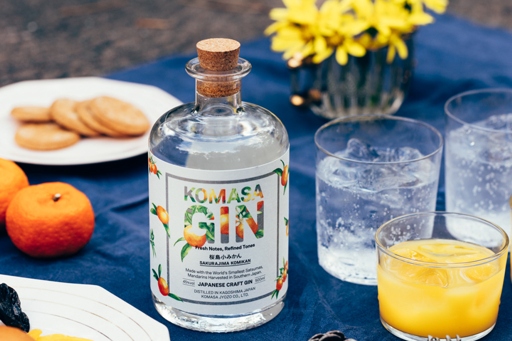
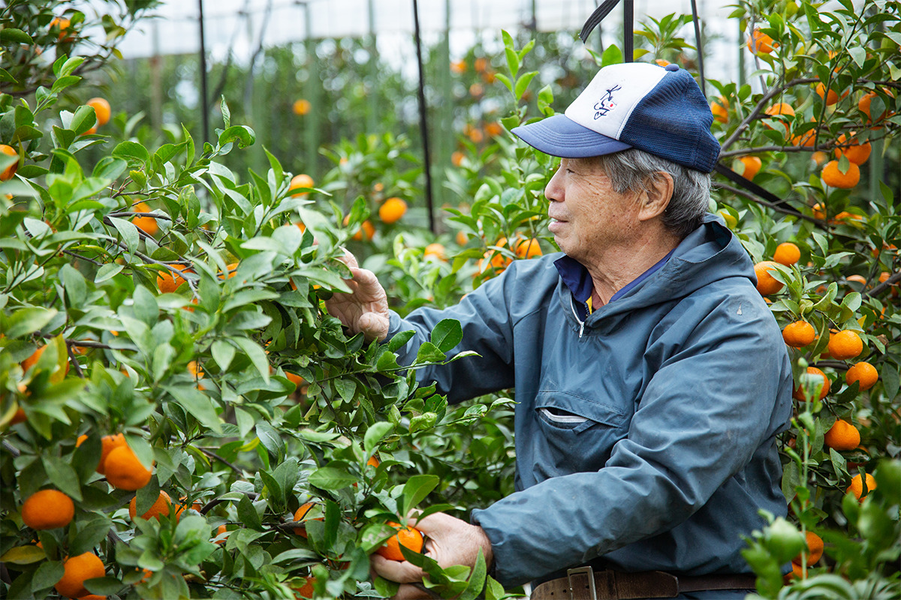
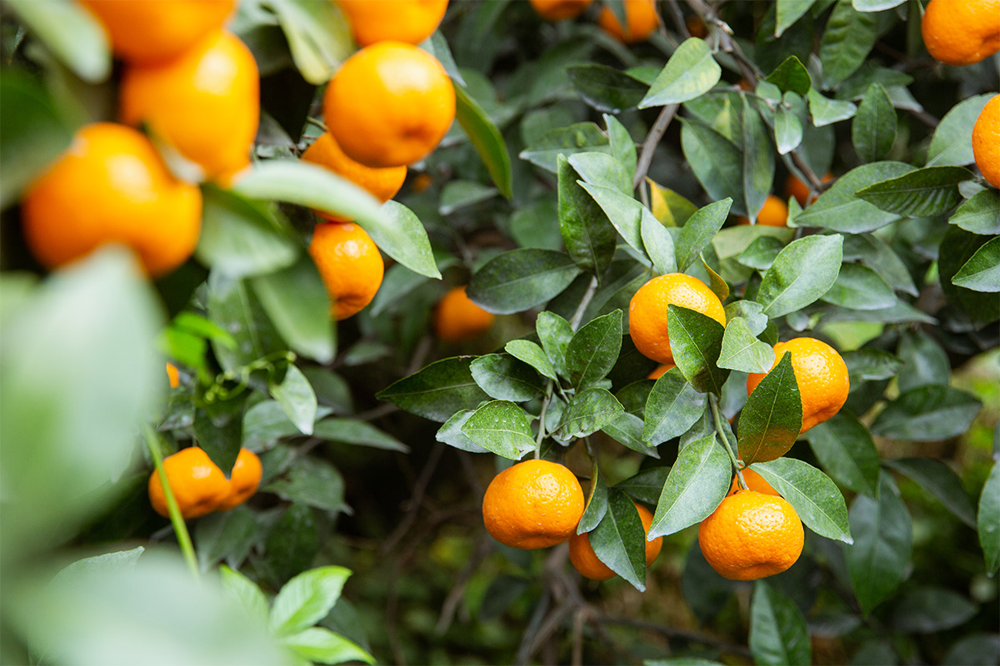
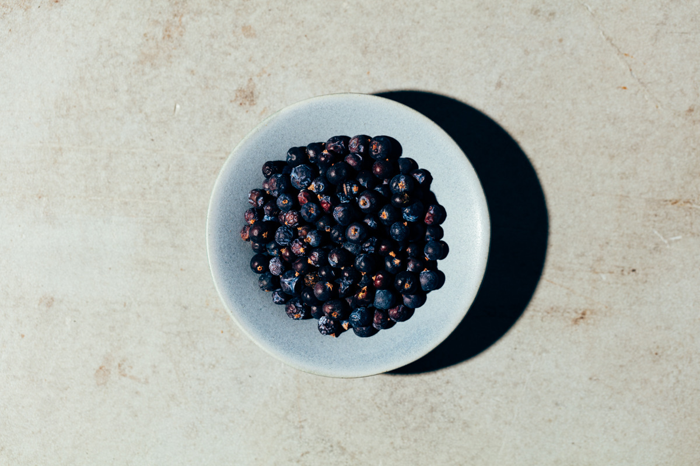
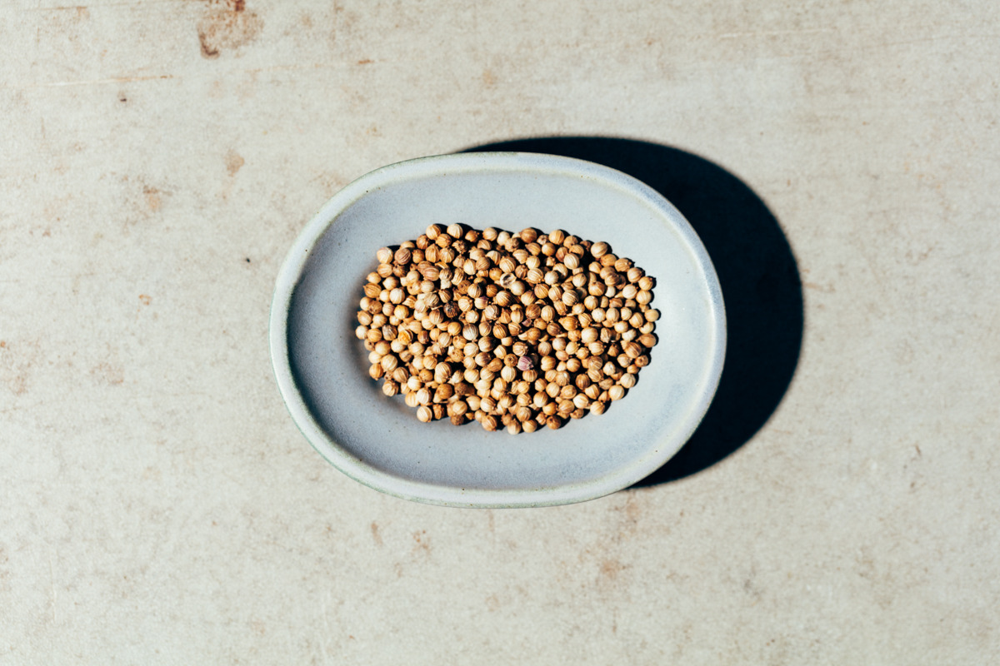
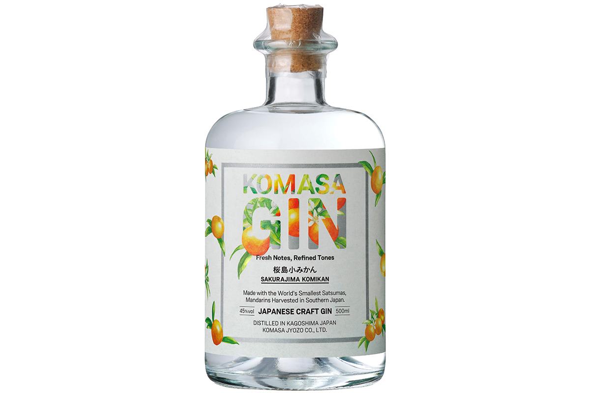
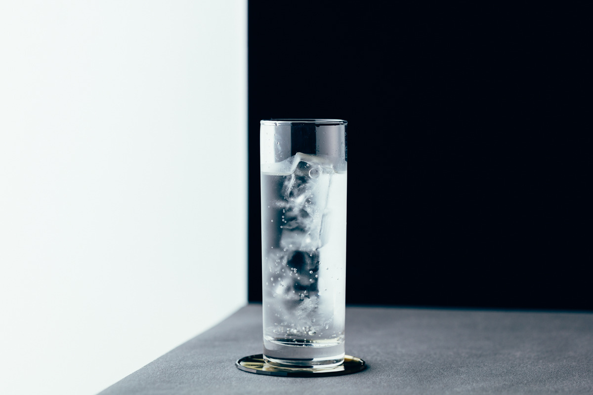
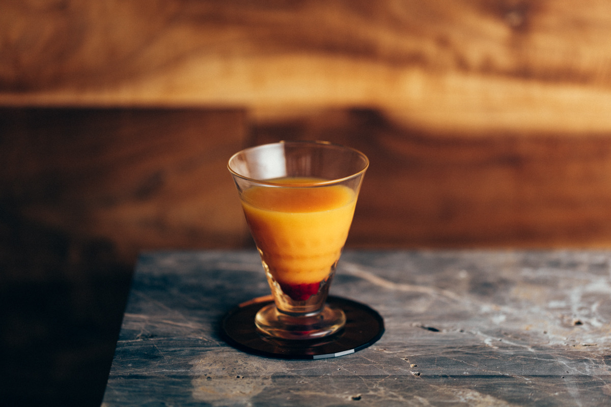
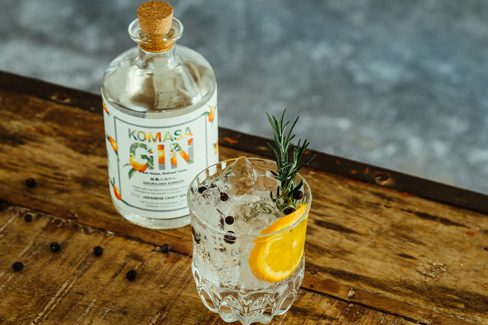

Префектура Кагосима · Сакурадзима · напитки
KOMASA GIN: джин из самых маленьких мандаринов в мире, выросших под пеплом Сакурадзимы

Первый глоток KOMASA GIN удивляет: сначала приходит сухой вкус джина, а за ним густой и мягкий аромат мандарина. Этот джин делает винокурня из префектуры Кагосима, которая больше 130 лет гонит сётю, и главную роль в нём играет мандарин с вулканического острова Сакурадзима.
Винокурня
Komasa Jyozo: сётю с 1883 года
Винокурню Komasa Jyozo основали в 1883 году. С самого начала она поставляла сакэ для подношений в местные святилища и всегда работала в тесной связи со своей землёй. Её сётю «Кодзуру» десятилетиями пьют за ужином местные жители.
Komasa Jyozo первой в Японии попробовала выдерживать сётю в бочках. Выдержанный сётю Mellowed Kozuru получился мягким, собрал множество наград в Японии и за рубежом и показал, на что способны японские крепкие напитки. KOMASA GIN продолжает этот поиск: винокурня хотела сделать джин, который легко пить самым разным людям и в котором при этом раскрывается характер крепкого напитка. В основе джина ботаника, выращенная в префектуре Кагосима.
Мандарин
Сакурадзима-комикан: самый маленький в мире

Сакурадзима это действующий вулкан, окружённый морем, и пепел падает здесь круглый год. Выращивать на таком острове мандарины непросто. От пепла деревья укрывают в теплицах, но мельчайшая пыль всё равно проникает в щели. Пепел обжигает кожуру, и плод портится, поэтому каждый мандарин фермеры очищают кисточкой вручную.
Урожай собирают всего около месяца, примерно с середины ноября. Даже на местных рынках «сакурадзима-комикан» появляется лишь на месяц в конце года, так что это редкий плод. На вулканической почве острова рис не растёт, и мандарины стали для Сакурадзимы одной из главных культур. Их выращивали уже в эпоху Эдо, а род Симадзу, правивший Сацумой, отправлял их в дар сёгунату.

Сакурадзима-комикан называют самым маленьким мандарином в мире: диаметр плода 4–5 см, вес от 20 до 50 г. Мякоть нежная и очень сочная, сахаристость не ниже 8,5 градуса, кислотность не выше 1%. Деревья плодоносят щедро, известны случаи, когда на одном дереве созревало больше 2000 мандаринов, поэтому, чтобы плоды выросли одного размера, за садом нужно внимательно ухаживать. В продажу мандарины поступают в декабре.
Рецептура
Секрет в щепотке кориандра
Знания о перегонке, накопленные винокурней с эпохи Мэйдзи, передаются от мастеров к ученикам, и этот опыт пригодился при создании джина. Основа KOMASA GIN это рисовый сётю. В нём настаивают отобранную ботанику по собственной рецептуре, а затем перегоняют: можжевеловые ягоды, мандарины Сакурадзимы, кориандр и другие ингредиенты.
Все знают, что щепотка соли делает сладкое ещё слаще. Такая скрытая приправа есть и в KOMASA GIN. Опытные мастера решают, что и в каком количестве добавить, чтобы ярче раскрыть аромат и вкус главной ботаники, и доводят смесь, полагаясь на все пять чувств.


Без можжевеловых ягод джина не бывает. Это плоды можжевельника обыкновенного, хвойного дерева из семейства кипарисовых, и именно они дают джину его свежий, слегка жгучий аромат. Можжевельник растёт в Европе, Северной Америке и Азии севернее 30-й параллели, достать его легко, и потому его сильный вкус и запах издавна используют в виноделии и на кухне.
Насыщенную сладость мандарина подчёркивают семена кориандра. Молотые семена служат пряностью, а молодые листья и стебли известны как кинза. Вкус и запах у семян сильные, поэтому их добавляют совсем немного: благодаря им цитрусовая сладость ложится на язык и задерживается на нём.
Джин
Сухой вкус и мягкий аромат мандарина

Чёткая сухость джина в сочетании с нежным ароматом мандарина делает KOMASA GIN непохожим на другие джины. Крепость 45%, объём бутылки 500 мл. В 2021 году бутылка без коробки стоила 3300 иен с налогом, в коробке 3520 иен с налогом.
Как пить
Два рецепта


Мандариновый джин-тоник. Аромат такой свежий, будто только что откусил мандарин, сорванный с ветки. Лёгкая сладость тоника раскрывает благоухание цитруса. Кто любит вкус посуше, может сделать джин-рики и разбавить джин просто содовой. Такой напиток подходит к любому случаю. Состав: 30 мл мандаринового джина, 60 мл тоника, 60 мл газированной воды.
«Закат над Фукиагэхамой». Коктейль придуман в честь заката над пляжем Фукиагэхама, который находится недалеко от винокурни. Апельсиновый сок подчёркивает мягкую сладость цитруса, а для акцента добавляют сладкий сироп из сока граната. Натуральная сладость апельсина делает коктейль лёгким, и он понравится даже тем, кто почти не пробовал джин. Состав: 30 мл мандаринового джина, 60 мл апельсинового сока, 10 мл сиропа гренадин.

Кроме мандаринового, у KOMASA GIN есть клубничный джин, где аромат ягод сочетается с травами, и джин с ходзитя, обжаренным зелёным чаем. Вкус у джинов чистый и без резкости, а в зависимости от того, с чем их смешать, они раскрываются по-разному. Их хорошо взять и для вечера дома, и на природу.
KOMASA GIN (Komasa Jyozo)
- Цены / Вход
- KOMASA GIN «Сакурадзима-комикан», 500 мл, 45%: 3300 иен с налогом без коробки, 3520 иен с налогом в коробке (2021 год)
- Сайт
- komasagin.com